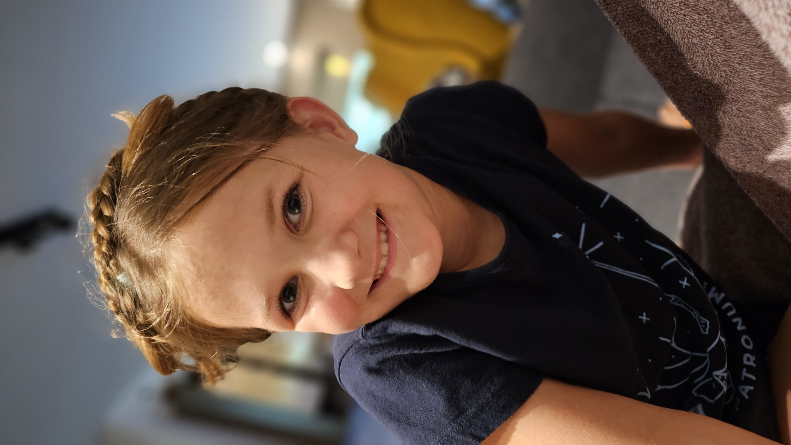

Kdo jsem
Jmenuji se Anežka Tichá a bydlím ve Spořicích. Mám ráda školu, hlavně matiku, angličtinu a hudebku.
Ahoj, vítej na mém blogu
Jmenuji se Anežka Tichá, bydlím ve Spořicích a baví mě učení i tvoření. Připravila jsem pro tebe školní kvízy od lehkých otázek až po těžší výzvy.

Jmenuji se Anežka Tichá a bydlím ve Spořicích. Mám ráda školu, hlavně matiku, angličtinu a hudebku.
Ve volném čase ráda háčkuju, chodím na florbal, dělám keramiku a hraju s rodiči deskové hry.
Budu ráda, když si vyzkoušíš některý z mých kvízů. Jsou připravené pro 3. třídu a najdeš v nich prvouku, matiku, češtinu, vyjmenovaná slova i angličtinu.
Malá výzva
Každý kvíz má 50 otázek. Na začátku tě čekají jednodušší úkoly a na konci těžší, takže si můžeš krásně vyzkoušet, jak moc si věříš.